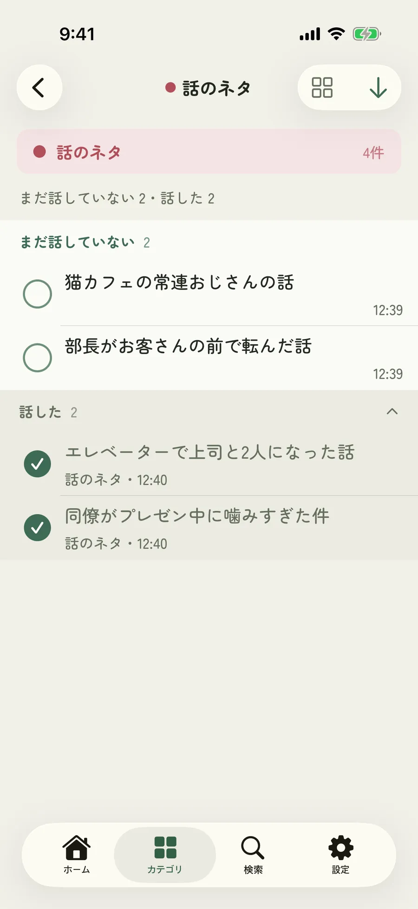
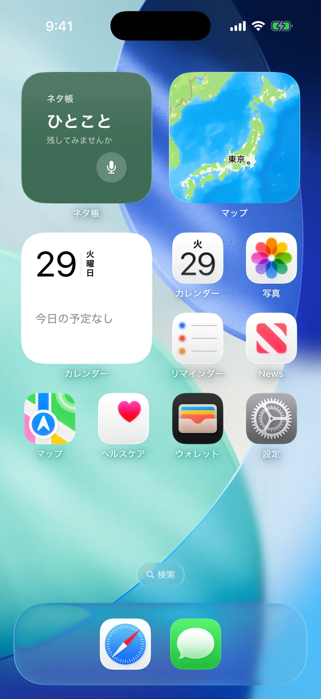
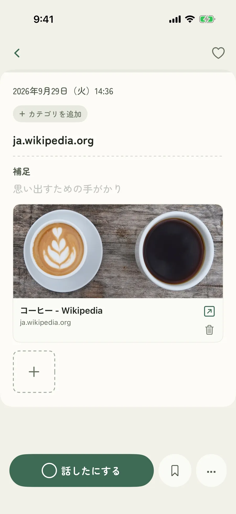

iPhone アプリ
あとで話したい出来事も、ふと浮かんだアイデアも。
芸人のネタ帳のように、短い言葉ですぐに残せるメモアプリです。
無料・iPhone 対応


バージョン 3.0
使い方
画面のいちばん下の入力欄に書いて「残す」を押すだけ。声でも入力できます。
一覧の丸を押すと「話した」に。同じ話を繰り返す心配が減ります。
カテゴリを開けば、まだ話していないネタがいつも上に並びます。

できること
一覧の丸を押すだけで状態が切り替わります。話したネタも記録として残ります。
それぞれのカテゴリに「まだ話していない数」を表示。開けば、まだのネタが上に並びます。
メモは1ページずつ表示。左右のスワイプで前後のメモへ移れます。その場で書き換えれば自動で保存されます。
1つのメモに写真を最大5枚。ギャラリー表示で並べて見返せます。
カテゴリは自由に追加でき、8色から色を選べます。1つのメモに複数のカテゴリも付けられます。
ウィジェットをタップすれば、そのまま声でメモを残せます。
Safari の共有ボタンから、タイトルと画像ごとページを保存できます。
検索はいつでも開ける独立したタブに。カテゴリで絞り込みながら探せます。
「準備中」のような状態を自分で追加して、進め方に合わせて管理できます。
画面
思いついたら、ひとことだけ
話したら、チェックをひとつ
芸人のネタ帳のように

まだのネタが、いつも上に

写真と並べて、見返せる

1ページずつ、めくって見返す

ホーム画面から、声で残す

気になるページも、そのまま
安心して使うために
書いたメモはすべてお使いの iPhone の中に保存され、ネタ帳のサーバーに送られることはありません。アカウントの登録も不要です。